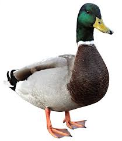

A Maior Comunidade de Patos da América
Instagram - Twitter - Telegram
Brasília, 09 de novembro de 2023 - Em um golpe surpreendente, o notório Patolino Cabeça de Pepino conseguiu escapar da prisão de segurança máxima em Brasília, lançando uma sombra sobre o sistema penitenciário do país. A audaciosa fuga levanta questões sobre a eficácia das medidas de segurança que deveriam conter criminosos de alta periculosidade.
As autoridades, em busca frenética por pistas sobre o paradeiro de Patolino, recentemente o localizaram
no Estado de Alagoas, no Nordeste brasileiro. Surpreendentemente, ao invés de manter um perfil discreto,
o criminoso foi avistado envolvido em atividades ilegais.
Patolino, agora conhecido como "Don Ovo",
foi flagrado comercializando ovos em um mercado local, desafiando abertamente as leis que proíbem tal
prática. Clientes relatam uma atmosfera tensa e a presença ostensiva de guardas do crime organizado ao
redor da barraca de Don Ovo.
As autoridades locais estão intensificando os esforços para capturar Patolino novamente e conter suas atividades criminosas em Alagoas. A polícia alerta a população para ficar atenta e relatar qualquer informação que possa levar à recaptura do fugitivo. Caso tenha visto este individuo alerte as autoridades locais de imediato.

O motivo por trás da mudança de Patolino para uma atividade tão arriscada como a venda ilegal de ovos
permanece desconhecido. A saga do pato mafioso continua a surpreender e desconcertar, enquanto o país
aguarda para ver como essa história inusitada se desdobrará nos próximos capítulos.
A tensão aumenta enquanto as autoridades trabalham incansavelmente para restaurar a ordem e a segurança
pública. O "Don Ovo" pode ser um novo disfarce, ou será que Patolino está planejando algo ainda mais
perigoso nos bastidores? A nação aguarda, com expectativa e apreensão, o desfecho dessa trama
inusitada.